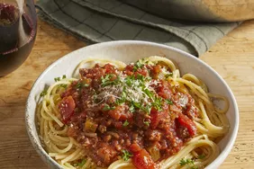

Homemade Spaghetti Sauce with Ground Beef

This recipe has been handed down from my mother. It is a family favorite
and will not be replaced! (Definite husband pleaser!) Serve over any
variety of hot cooked pasta.
How to Make Spaghetti Sauce with Ground Beef
Restaurant-worthy spaghetti sauce with ground beef is just a few steps
away. You'll find the full recipe below, but here's a brief overview of
what you can expect:
Cook Beef and Veggies
Cook ground beef in a saucepan over medium-high heat with garlic, onion,
and green pepper. Stir until the meat is brown and crumbly. The vegetables
should be tender.
Ingredients
- 1 pound ground beef
- 1 medium onion, chopped
- 4 cloves garlic, minced
- 1 small green bell pepper, diced
- 1 (28 ounce) can diced tomatoes
- 1 (16 ounce) can tomato sauce
- 1 (6 ounce) can tomato paste
- 2 teaspoons dried oregano
- 2 teaspoons dried basil
- 1 teaspoon salt
- ½ teaspoon ground black pepper
Steps
- Gather all ingredients.
-
Combine ground beef, onion, garlic, and green pepper in a large saucepan
over medium-high heat. Cook and stir until meat is browned and crumbly
and vegetables are tender, 5 to 7 minutes. Drain grease.
-
Stir diced tomatoes, tomato sauce, and tomato paste into the pan. Season
with oregano, basil, salt, and pepper. Simmer spaghetti sauce for 1
hour, stirring occasionally.